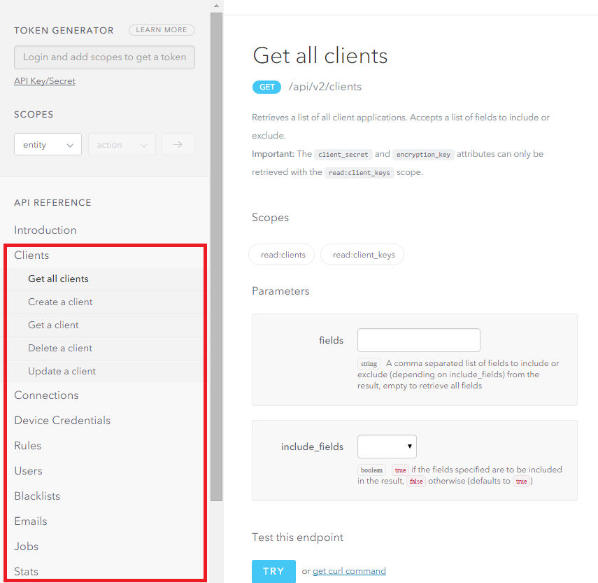

Auth0 .NET SDK
Description
Welcome to the documentation for the Auth0 .NET SDK. This reference will give you basic guidance on how to use the .NET SDK to access the Auth0 Management API and Authentication API.
This documentation is supplemental to the official Auth0 API documentation. For more information on the Authentication and Management APIs, you can visit their official documentation by following one of the links below:
The rest of this documentation will guide your through the process of installing the various Nuget Packages, as well as some basic examples. You will also find the full references for all the classes and types in the Auth0 .NET SDK.
Installation
You can install the Auth0 .NET SDK trough Nuget. Two different Nuget packages are available, one for the Authentication API, and one for the Management API.
Installing the SDK for the Authentication API
You can install the SDK for the Authentication API throug the Package Manager Console inside Visual Studio:
Install-Package Auth0.AuthenticationApi
Alternatively you can install it through the Package Manager Dialog by searching for the Auth0.AuthenticationApi package.
Installing the SDK for the Management API
You can install the SDK for the Management API throug the Package Manager Console inside Visual Studio:
Install-Package Auth0.ManagementApi
Alternatively you can install it through the Package Manager Dialog by searching for the Auth0.ManagementApi package.
Using the Authentication API
This section will take your through the basics of using the Authentication API.
Basic Usage
Ensure that you include the Authentication API namespace in your source code file:
using Auth0.AuthenticationApi;
To start using the API, you need to create an instance of the AuthenticationApiClient class, passing the URL of your Auth0 instance:
var client = new AuthenticationApiClient(new Uri("https://YOUR_AUTH0_DOMAIN/"));
You can obtain your Auth0 Domain from the Application section of the Auth0 Dashboard by looking at the settings for your particular application.
For more details on the various methods that are available, please refer to the documentation of the AuthenticationApiClient class.
Using URL Builders
Several helper methods are available to allow you to build URLs that you can redirect your user to for example to build up an authorization URL.
These methods follow a fluent syntax, meaning that you can keep chaining method calls together to build up the URL.
Finally, to build the actual URL, you will need to call the Build() method.
The following are the list of URL builder helper methods:
For example, to build up an authorization URL, you can write the following code:
var client = new AuthenticationApiClient(new Uri("https://YOUR_AUTH0_DOMAIN/"));
var authorizationUrl = client.BuildAuthorizationUrl()
.WithResponseType(AuthorizationResponseType.Code)
.WithClient("abcdef")
.WithConnection("google-oauth2")
.WithRedirectUrl("http://www.myapp.com/redirect")
.WithScope("openid offline_access")
.Build();
The sample code above will generate a URL for you to which you can redirect a user. For example, in an ASP.NET MVC Controller Action, you may do the following:
public ActionResult Login()
{
var client = new AuthenticationApiClient(new Uri("https://YOUR_AUTH0_DOMAIN/"));
var authorizationUrl = client.BuildAuthorizationUrl()
.WithResponseType(AuthorizationResponseType.Code)
.WithClient("abcdef")
.WithConnection("google-oauth2")
.WithRedirectUrl("http://www.myapp.com/redirect")
.WithScope("openid offline_access")
.Build();
return Redirect(authorizationUrl);
}
Important
If you choose to use the AuthorizationUrlBuilder to construct the authorization URL and implement a login flow callback yourself, it is important to generate and store a state value using WithState(String) and validate it in your callback URL before calling exchanging the authorization code for the tokens.
Using the Management API
This section will take your through the basics of using the Management API.
Basic Usage
Ensure that you include the Management API namespace in your source code file:
using Auth0.ManagementApi;
To start using the API, you need to create an instance of the ManagementApiClient class, passing a token and the URL to the Management API of your Auth0 instance:
// Replace YOUR_AUTH0_DOMAIN with the domain of your Auth0 tenant, e.g. mycompany.auth0.com
var client = new ManagementApiClient("token", "YOUR_AUTH0_DOMAIN");
You can obtain your Auth0 Domain from the Application section of the Auth0 Dashboard by looking at the settings for your particular application.
Note
For details on how to generate the token, please see the "Getting an API token" section of the Management API documentation
For more details on the various methods that are available, please refer to the documentation of the ManagementApiClient class.
Organization of the ManagementApiClient
All methods for the Management API are grouped together in a similar fashion as what you will find when browsing the Management API documentation.
In the screenshot of the API documentation below you can see that the API methods are organized by functional group, e.g Clients, Connections, Device Credentials, etc.

The .NET Client SDK for the Management API also groups the API methods according to these functional groups. The functional groups are available as properties on the ManagementApiClient class, so you will for example find all Clients related API calls under the Clients property.
Below is an example of how you can get a list of all clients:
// Replace YOUR_AUTH0_DOMAIN with the domain of your Auth0 tenant, e.g. mycompany.auth0.com
var apiClient = new ManagementApiClient("token", "YOUR_AUTH0_DOMAIN");
var allClients = await apiClient.Clients.GetAllAsync();
Client reuse and thread safety
Neither the ManagementApiClient or the AuthenticationApiClient are threadsafe, as they store the result of the last call to an API (obtainable by the GetLastApiInfo method). It's ok to reuse them in the same thread to do subsequent calls, but they shouldn't be created as a singleton instance used across multiple threads.
Both clients are really lightweight to instantiate, so creating a new instance every time they are needed shouldn't be a concern.
Advanced Scenarios
Using a Proxy Server
If you need to specify a Proxy Server, you can do so by making use of the AuthenticationApiClient or ManagementApiClient constructors which takes an HttpMessageHandler instance, and pass along an instance of HttpClientHandler, specifying the Proxy settings:
var handler = new HttpClientHandler {
Proxy = new WebProxy {
Credentials = new NetworkCredential(username, password);
}
};
var authenticationApiClient = new AuthenticationApiClient("YOUR_AUTH0_DOMAIN", handler);
Passing extra headers
There are some instances where you may want to pass extra headers with the request, such as the auth0-forwarded-for header. You can do so by making use of the AuthenticationApiClient or ManagementApiClient constructors which takes an HttpMessageHandler instance, and then creating a class which inherits from HttpMessageHandler which adds the extra headers to all requests.
// Create a new class which inherits from HttpMessageHandler (HttpClientHandler inherits from HttpMessageHandler)
public class CustomMessageHandler : HttpClientHandler
{
protected override Task<HttpResponseMessage> SendAsync(HttpRequestMessage request, CancellationToken cancellationToken)
{
// Add extra header(s) to the request
request.Headers.Add("auth0-forwarded-for", "189.214.5.210");
return base.SendAsync(request, cancellationToken);
}
}
// Somewhere else in your application, you can now pass an instance of this class to the constructor of AuthenticationApiClient or ManagementApiClient
var authenticationApiClient = new AuthenticationApiClient("YOUR_AUTH0_DOMAIN", new CustomMessageHandler());